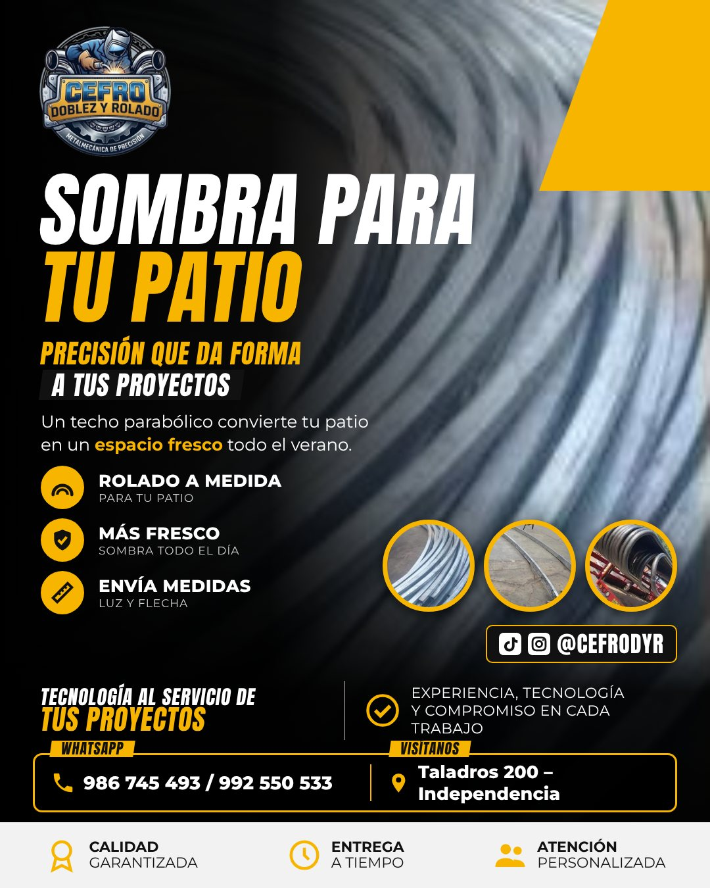
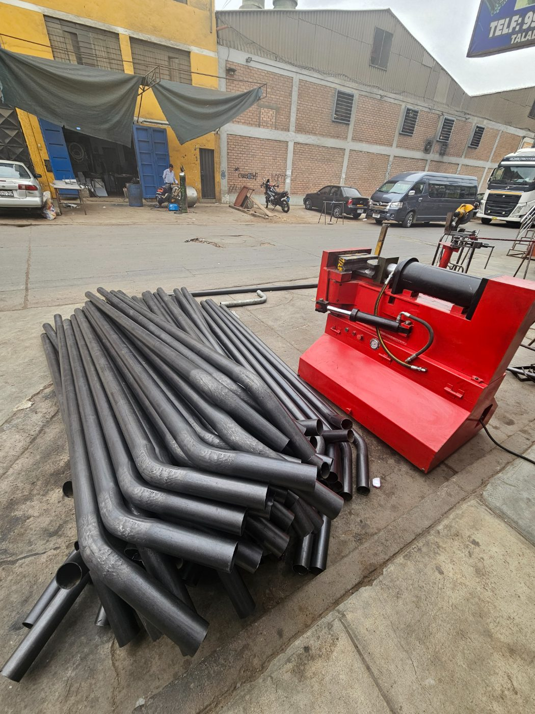
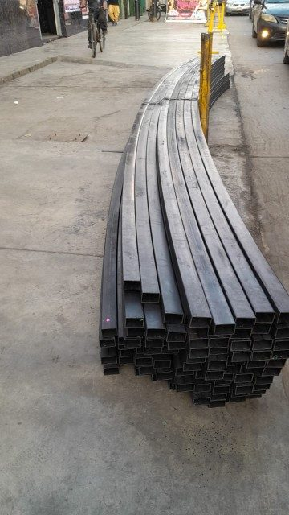
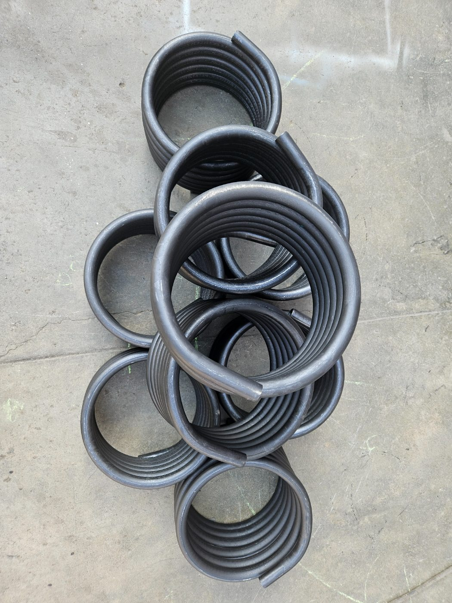
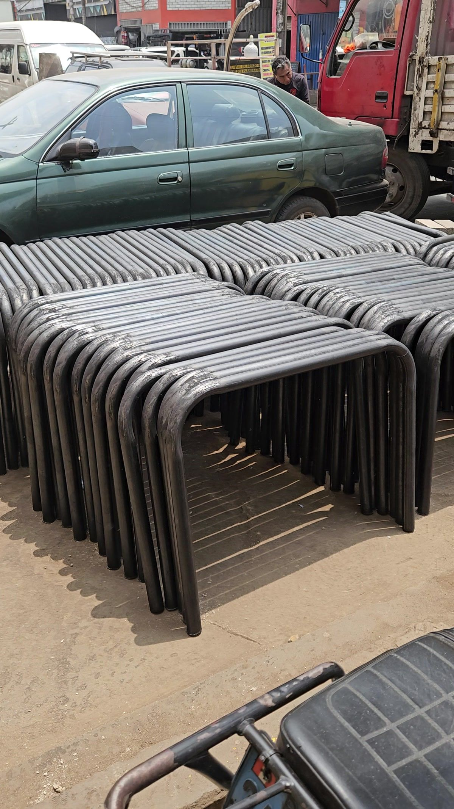
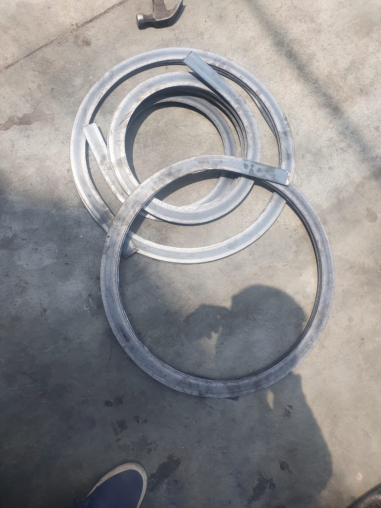
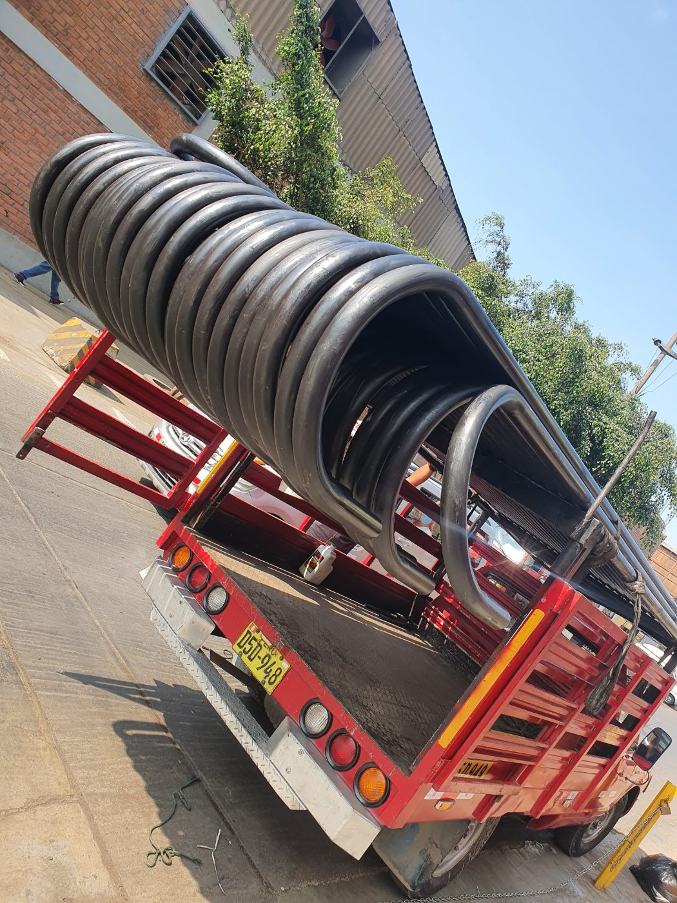
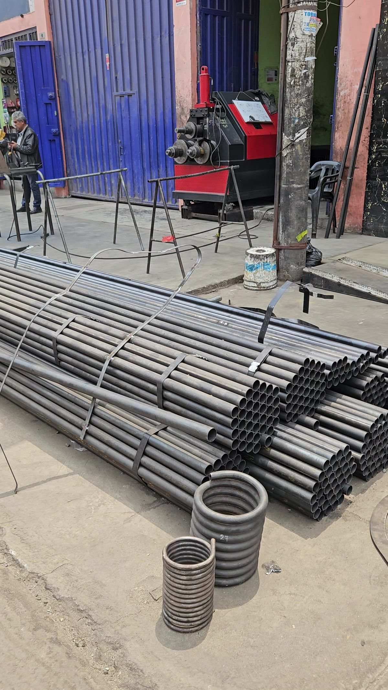

Techos parabólicos, rolado y doblez
Desliza para ver más y toca una imagen para verla en grande.




Mira cómo trabajamos
Videos de nuestros techos parabólicos, rolado y doblez. Desliza para ver más.
Cómo trabajamos
- 📸
Envíanos tu foto o plano
Por WhatsApp, con la medida del tubo o perfil, el radio o ángulo y la cantidad.
- 💬
Te cotizamos rápido
Te respondemos con el precio y el tiempo de entrega. Sin compromiso.
- 🔩
Rolamos y doblamos
Con roladora y dobladora hidráulicas: radio exacto y piezas iguales.
- 🚚
Recoges tu pedido
En Taladros 200, Independencia. También puedes traer tu propio material.
Nuestros servicios
Trabajo a medida para obras, techos y estructuras.


Techos parabólicos a medida
Rolamos los arcos de tu techo parabólico con el radio exacto y todos iguales, en acero, galvanizado, ángulo, platina, canaletas, tubo rectangular y tubos schedule. Ideal para cobertizos, estacionamientos, coliseos, galpones y coberturas.
Maquinaria de alta precisión
Contamos con máquinas de alta precisión para rolar y doblar tubos y perfiles con medidas exactas y acabado limpio.


CEFRO Doblez y Rolado
Somos una empresa industrial de metalmecánica de precisión ubicada en Independencia, Lima. Ofrecemos rolado y doblez de tubos para techos parabólicos, en acero, galvanizado, ángulo, platina, canaletas, tubo rectangular y tubos schedule, además de soldadura para todo tipo de estructuras metálicas.
ContáctenosPublicaciones y novedades
Mira nuestros últimos trabajos en redes sociales.

Doblez de tubosDoblez de tubos de hasta 3 pulgadas
Publicado el 21 de octubre en nuestro Facebook.
Ver en Facebook →Síguenos en Facebook
Fotos, videos y novedades de nuestros trabajos.
Ir a Facebook → Instagram
InstagramSíguenos en Instagram
Nuestro perfil: @cefrodyr.
Ir a Instagram →TikTokSíguenos en TikTok
Videos de nuestras máquinas y trabajos: @cefrodyr.
Ir a TikTok →Más servicios

Rolado de tubo rectangularTubo cuadrado y rectangular en arco parejo.Ver más →
Tubos scheduleCurvas y aros en tubo de pared gruesa.Ver más →
Barandas y pasamanosDoblez en U, codos y curvas limpias.Ver más →
Ángulo, platina y canaletasAros, arcos y círculos completos.Ver más →
Coberturas y coliseosArcos grandes para coliseos y estacionamientos.Ver más →
Taller en Lima NorteIndependencia, cerca de Los Olivos, SMP y Comas.Ver más →Atendemos en: Independencia · Los Olivos · San Martín de Porres · Comas · Callao · y todo Lima
¿Ya trabajaste con nosotros?
Tu opinión ayuda a que más personas encuentren un taller de confianza. ¡Gracias!
Lo que más nos preguntan
¿Hacen los arcos para techos parabólicos?
Sí. Rolamos los arcos de tu techo parabólico con radio exacto y todos iguales, en tubo redondo, tubo rectangular, ángulo, platina y canaletas, para cocheras, patios, colegios, canchas, coliseos y naves.
¿Hasta qué medida de tubo pueden rolar y doblar?
Rolamos tubos de hasta 4.5 pulgadas y doblamos tubos de hasta 3 pulgadas, incluidos tubo negro, galvanizado y tubos schedule de pared gruesa.
¿Dónde está el taller?
En Taladros 200, Independencia (Lima Norte). Atendemos a todo Lima: Los Olivos, San Martín de Porres, Comas, Callao y más.
¿Qué horario de atención tienen?
De lunes a viernes de 8:00 a. m. a 5:00 p. m. y los sábados de 8:00 a. m. a 4:00 p. m.
¿Cómo pido una cotización?
Escríbenos por WhatsApp al 992 550 533 o al 986 745 493 con una foto o plano, la medida del tubo o perfil, el radio o ángulo y la cantidad de piezas.
¿Puedo llevar mi propio material?
Sí. Puedes traer tus tubos o perfiles a Taladros 200 y les damos la curva o el doblez que necesitas.
Contáctenos
Envíanos tus medidas y te respondemos con tu cotización.
| Lunes a viernes | 8:00 a. m. – 5:00 p. m. |
|---|---|
| Sábados | 8:00 a. m. – 4:00 p. m. |
| Domingos | Cerrado |